January, 12th 2020¶
Motivation: Simulation to understand Partial Least Squares (PLS) and Canonical Correlation Analysis (CCA).
Result: These methods detect the shared, low-dimensional latent signal in simulated data.
# HIDE CODE
# imports
import os
import sys
import h5py
import pickle
import random
import numpy as np
import pandas as pd
from os.path import join as pjoin
from copy import deepcopy as dc
from tqdm.notebook import tqdm
from collections import Counter
import matplotlib.pyplot as plt
import seaborn as sns
sns.set_style('whitegrid')
github_path = pjoin(os.environ['HOME'], 'Dropbox/git/A1ToneDiscrimination/')
sys.path.insert(0, github_path)
from utils.process import *
from utils.generic_utils import *
from utils.plot_functions import *
import warnings
warnings.filterwarnings('ignore', category=RuntimeWarning)
import rcca
from sklearn.cross_decomposition import PLSCanonical
from sklearn.linear_model import LogisticRegression
from sklearn.metrics import balanced_accuracy_score, matthews_corrcoef, f1_score
from simulation.simulation import *
SEED = 42
np.random.seed(SEED)
random.seed(SEED)
# load data
# dirs_dict = get_dirs()
Simulation¶
In this seciton I will briefly describe details of the simulation.
Random projection to higher dim space¶
SIM¶
n_samples = int(1e6)
dim_x, dim_y = 8, 8
sigma = 0.5
sim = create_pls_simulation(
n_samples=n_samples,
three_d=False,
angle_spacing=1.0,
magnitude_range=None,
dim_x=dim_x,
dim_y=dim_y,
sigma=sigma,
orthogonal=False,
normal=True,
seed=SEED,
)
pls = PLSCanonical(
n_components=3,
scale=True,
algorithm='svd',
max_iter=int(1e9),
tol=1e-15,
).fit(sim['x_train'], sim['y_train'])
results = visualize_pls_results(pls, sim, verbose=True)
Simulation info:
num samples: 1e+06,
noise sigma: 0.5,
dim Z: 2,
dim X: 8,
dim Y: 8
matrix values:
X:
[[-0.97616372 0.09995446]
[ 0.23588685 0.95087454]]
Y:
[[-0.96326662 0.07617585]
[ 0.18448362 0.92466731]]
Angle between true projection vectors:
X: 97 degrees, Y: 98 degrees
Angle between retreived loading vectors:
X: 89 degrees, Y: 92 degrees
results
{'latent_corr': 0.951,
'proj_cos_sim': 0.954,
'pred_r2': 64.922,
'pred_r': 0.813}
LOOP¶
Effect of projection dimensionality¶
from tqdm.notebook import tqdm
df, args = run_pls_loop(
sample_sizes=int(1e3),
dims_x=np.arange(4, 121, 2).astype(int),
dims_y=np.arange(4, 181, 2).astype(int),
three_d=False,
orthogonal=False,
normal=True,
sigmas=0.2,
)
latent_corr = np.zeros((len(args['dims_x']), len(args['dims_y'])))
proj_cos_sim = np.zeros((len(args['dims_x']), len(args['dims_y'])))
r2 = np.zeros((len(args['dims_x']), len(args['dims_y'])))
r = np.zeros((len(args['dims_x']), len(args['dims_y'])))
for i, dim_x in enumerate(args['dims_x']):
for j, dim_y in enumerate(args['dims_y']):
selected_df = df.loc[(df.dim_x == dim_x) & (df.dim_y == dim_y)]
r[i, j] = selected_df.pred_r.mean()
r2[i, j] = selected_df.pred_r2.mean()
latent_corr[i, j] = selected_df.latent_corr.mean()
proj_cos_sim[i, j] = selected_df.proj_cos_sim.mean()
fig, axes = plt.subplots(2, 2, figsize=(12, 10))#, sharex='all', sharey='all')
sns.heatmap(r, ax=axes[0, 0])
sns.heatmap(r2, ax=axes[0, 1])
sns.heatmap(latent_corr, ax=axes[1, 0])
sns.heatmap(proj_cos_sim, ax=axes[1, 1])
axes[0, 0].set_title('r')
axes[0, 1].set_title('$r^2$')
axes[1, 0].set_title('latent corr')
axes[1, 1].set_title('proj cosine sim')
axes[0, 0].set_ylabel('dim X')
axes[1, 0].set_ylabel('dim X')
axes[1, 0].set_xlabel('dim Y')
axes[1, 1].set_xlabel('dim Y')
xticks = [i for i, item in enumerate(args['dims_y']) if item % 8 == 0]
yticks = [i for i, item in enumerate(args['dims_x']) if item % 8 == 0]
for i in range(2):
for j in range(2):
axes[i, j].set_xticks(xticks)
axes[i, j].set_yticks(yticks)
axes[i, j].set_xticklabels(np.array(args['dims_y'])[xticks])
axes[i, j].set_yticklabels(np.array(args['dims_x'])[yticks])
fig.tight_layout()
plt.show()
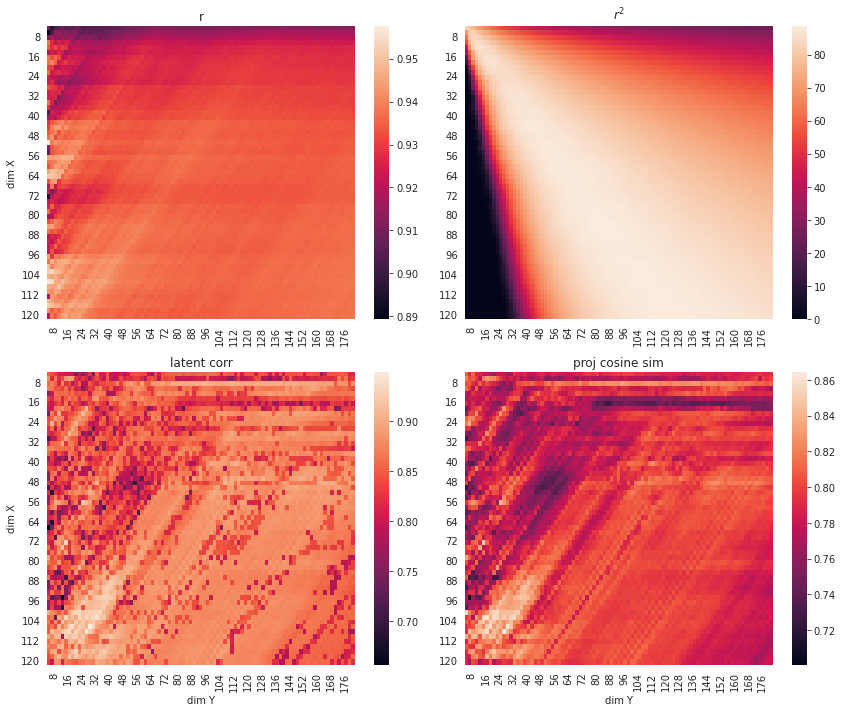
df, args = run_pls_loop(
n_seeds=30,
equal_dims=True,
sample_sizes=int(1e2),
dims_x=list(np.arange(3, 71, 1).astype(int)),
three_d=False,
orthogonal=[False, True],
normal=True,
sigmas=[0.0, 0.25, 0.5],
)
sns.set_style('whitegrid')
fig, axes = plt.subplots(2, 4, figsize=(13, 5), sharex='all', sharey='col')
palette = sns.color_palette(palette=None, n_colors=3)
for i in range(2):
selected_df = df.loc[df.orthogonal == i]
sns.lineplot(x='dim_x', y='pred_r2', data=selected_df, hue='sigma', style='sigma',
legend=False, dashes=False, lw=2, palette=palette, ax=axes[i, 0])
sns.lineplot(x='dim_x', y='pred_r', data=selected_df, hue='sigma', style='sigma',
legend=False, dashes=False, lw=2, palette=palette, ax=axes[i, 1])
sns.lineplot(x='dim_x', y='latent_corr', data=selected_df, hue='sigma', style='sigma',
legend=True, dashes=False, lw=2, palette=palette, ax=axes[i, 2])
sns.lineplot(x='dim_x', y='proj_cos_sim', data=selected_df, hue='sigma', style='sigma',
legend=False, dashes=False, lw=2, palette=palette, ax=axes[i, 3])
plt.tight_layout()
plt.show()
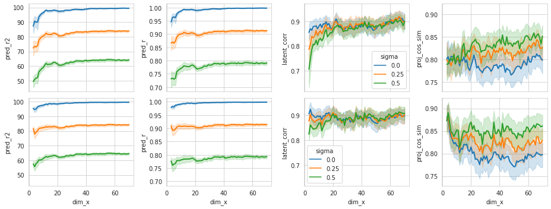
result = []
for d in range(300):
result.append(cos_similarity(np.random.randn(d), np.random.randn(d)))
plt.figure(figsize=(10, 4.5))
plt.plot(result, lw=2)
plt.axhline(0, color='r')
plt.xlabel('dim', fontsize=13)
plt.ylabel('cosine similarity', fontsize=13)
plt.show()
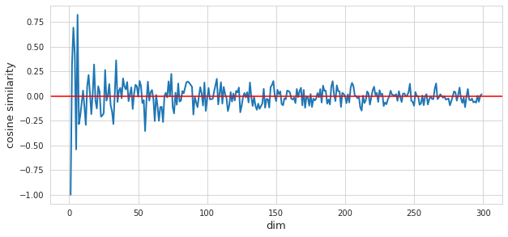
Effect of num samples¶
df, args = run_pls_loop(
sample_sizes=[10, 50, 100, 150, 200, 300],
equal_dims=True,
dims_x=[4, 16, 64],
three_d=False,
orthogonal=False,
normal=True,
sigmas=0.5,
n_seeds=30,
)
plt.figure(figsize=(9, 7))
plt.subplot(221)
sns.barplot(x='n_samples', y='pred_r2', data=df, hue='dim_x')
plt.ylim(20, 70)
plt.subplot(222)
sns.barplot(x='n_samples', y='pred_r', data=df, hue='dim_x')
plt.ylim(0.5, 0.9)
plt.subplot(223)
sns.barplot(x='n_samples', y='latent_corr', data=df, hue='dim_x')
plt.ylim(0.1, 1.0)
plt.subplot(224)
sns.barplot(x='n_samples', y='proj_cos_sim', data=df, hue='dim_x')
plt.ylim(0.7, 0.9)
plt.tight_layout()
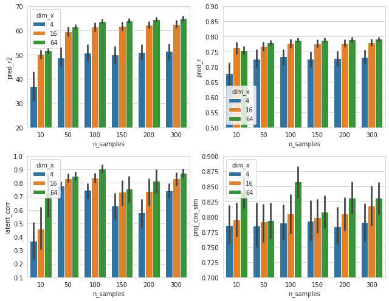
Effect of noise¶
df, args = run_pls_loop(
n_seeds=30,
equal_dims=True,
sample_sizes=[100, 1000, 100000],
dims_x=[4],
three_d=False,
orthogonal=False,
normal=True,
sigmas=np.linspace(0.0, 2.0, 41)[::-1],
)
plt.figure(figsize=(8, 6))
palette = sns.color_palette(palette=None, n_colors=3)
plt.subplot(221)
sns.lineplot(x='sigma', y='pred_r2', data=df, hue='n_samples', style='n_samples',
dashes=False, lw=2, palette=palette)
plt.subplot(222)
sns.lineplot(x='sigma', y='pred_r', data=df, hue='n_samples', style='n_samples',
dashes=False, lw=2, palette=palette)
plt.subplot(223)
sns.lineplot(x='sigma', y='latent_corr', data=df, hue='n_samples', style='n_samples',
dashes=False, lw=2, palette=palette)
plt.subplot(224)
sns.lineplot(x='sigma', y='proj_cos_sim', data=df, hue='n_samples', style='n_samples',
dashes=False, lw=2, palette=palette)
plt.tight_layout()
plt.show()
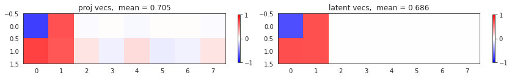
3D PLS¶
df, args = run_pls_loop(
n_seeds=30,
equal_dims=True,
sample_sizes=int(1e2),
dims_x=list(np.arange(3, 71, 1).astype(int)),
three_d=True,
orthogonal=[False, True],
normal=True,
sigmas=[0.0, 0.25, 0.5],
)
sns.set_style('whitegrid')
fig, axes = plt.subplots(2, 4, figsize=(13, 5), sharex='all', sharey='col')
palette = sns.color_palette(palette=None, n_colors=3)
for i in range(2):
selected_df = df.loc[df.orthogonal == i]
sns.lineplot(x='dim_x', y='pred_r2', data=selected_df, hue='sigma', style='sigma',
legend=False, dashes=False, lw=2, palette=palette, ax=axes[i, 0])
sns.lineplot(x='dim_x', y='pred_r', data=selected_df, hue='sigma', style='sigma',
legend=False, dashes=False, lw=2, palette=palette, ax=axes[i, 1])
sns.lineplot(x='dim_x', y='latent_corr', data=selected_df, hue='sigma', style='sigma',
legend=True, dashes=False, lw=2, palette=palette, ax=axes[i, 2])
sns.lineplot(x='dim_x', y='proj_cos_sim', data=selected_df, hue='sigma', style='sigma',
legend=False, dashes=False, lw=2, palette=palette, ax=axes[i, 3])
plt.tight_layout()
plt.show()
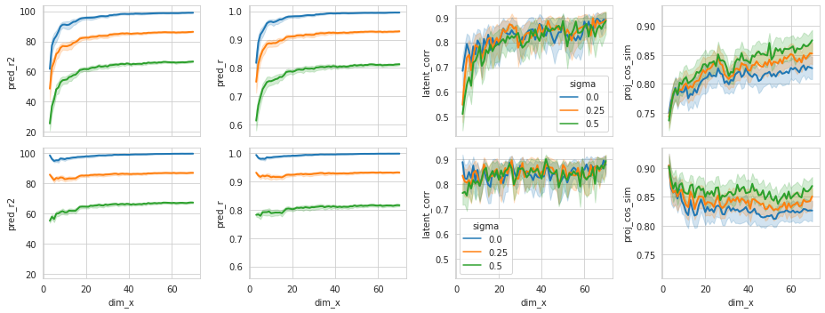
Effect of num samples¶
df, args = run_pls_loop(
sample_sizes=[10, 50, 100, 150, 200, 300],
equal_dims=True,
dims_x=[4, 16, 64],
three_d=True,
orthogonal=False,
normal=True,
sigmas=0.5,
n_seeds=30,
)
plt.figure(figsize=(9, 7))
plt.subplot(221)
sns.barplot(x='n_samples', y='pred_r2', data=df, hue='dim_x')
plt.ylim(0, 70)
plt.subplot(222)
sns.barplot(x='n_samples', y='pred_r', data=df, hue='dim_x')
plt.ylim(0.3, 0.9)
plt.subplot(223)
sns.barplot(x='n_samples', y='latent_corr', data=df, hue='dim_x')
plt.ylim(0.4, 1.0)
plt.subplot(224)
sns.barplot(x='n_samples', y='proj_cos_sim', data=df, hue='dim_x')
plt.ylim(0.7, 0.9)
plt.tight_layout()
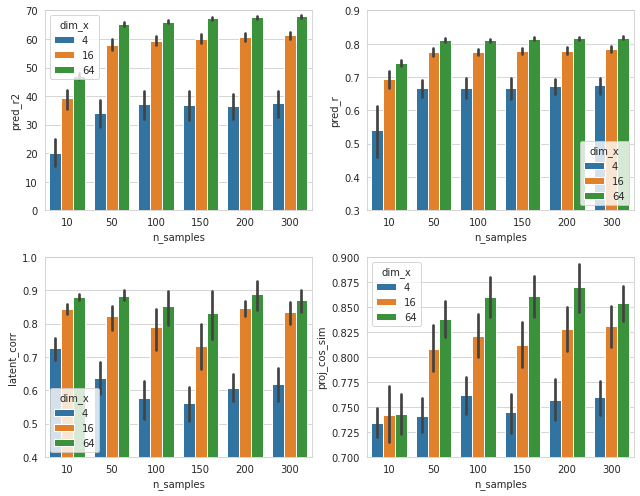
Effect of noise¶
df, args = run_pls_loop(
n_seeds=30,
equal_dims=True,
sample_sizes=[100, 1000, 100000],
dims_x=[4],
three_d=True,
orthogonal=False,
normal=True,
sigmas=np.linspace(0.0, 2.0, 41)[::-1],
)
plt.figure(figsize=(8, 6))
palette = sns.color_palette(palette=None, n_colors=3)
plt.subplot(221)
sns.lineplot(x='sigma', y='pred_r2', data=df, hue='n_samples', style='n_samples',
dashes=False, lw=2, palette=palette)
plt.subplot(222)
sns.lineplot(x='sigma', y='pred_r', data=df, hue='n_samples', style='n_samples',
dashes=False, lw=2, palette=palette)
plt.subplot(223)
sns.lineplot(x='sigma', y='latent_corr', data=df, hue='n_samples', style='n_samples',
dashes=False, lw=2, palette=palette)
plt.subplot(224)
sns.lineplot(x='sigma', y='proj_cos_sim', data=df, hue='n_samples', style='n_samples',
dashes=False, lw=2, palette=palette)
plt.tight_layout()
plt.show()
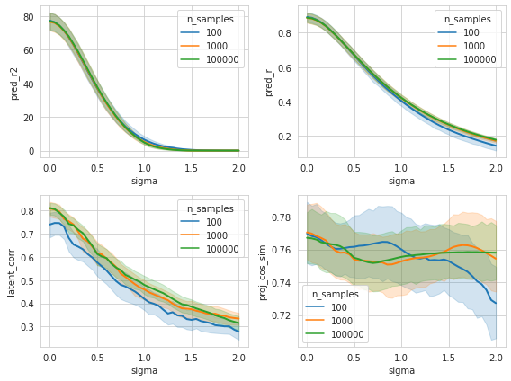
CCA¶
import rcca
sim = create_cca_simulation(
num_expts=10,
min_num_cells=16,
max_num_cells=128,
n_samples=int(1e2),
sigma=0.1,
seed=42,)
cca = rcca.CCA(kernelcca=True, ktype='linear', reg=0.1, numCC=2)
cca.train(sim['x_train']);
Training CCA, kernel = linear, regularization = 0.1000, 2 components
results = visualize_cca_results(cca, sim, verbose=True)
results
{'latent_corr': 0.979, 'proj_cos_sim': 0.977, 'pred_r': 0.977}
plt.figure(figsize=(18, 6))
corrs_all = []
for expt_id in range(10):
cos_sim = np.zeros((2, 2))
for i in range(2):
for j in range(2):
cos_sim[i, j] = cos_similarity(sim['proj_mats'][expt_id][:, i], cca.ws[expt_id][:, j])
_corrs = np.max(np.abs(cos_sim), axis=0)
corrs_all.append(np.mean(_corrs))
plt.subplot(2, 5, expt_id+1)
plt.imshow(cos_sim, cmap='bwr', vmin=-1, vmax=1)
plt.xticks(range(2))
plt.yticks(range(2))
plt.colorbar()
msg = 'corr:\ndim1: {:.2f}, dim2: {:.2f}'
msg = msg.format(*_corrs)
plt.title(msg)
plt.suptitle('avg corr = {:.2f}'.format(np.mean(corrs_all)), fontsize=15)
plt.tight_layout()
plt.show()
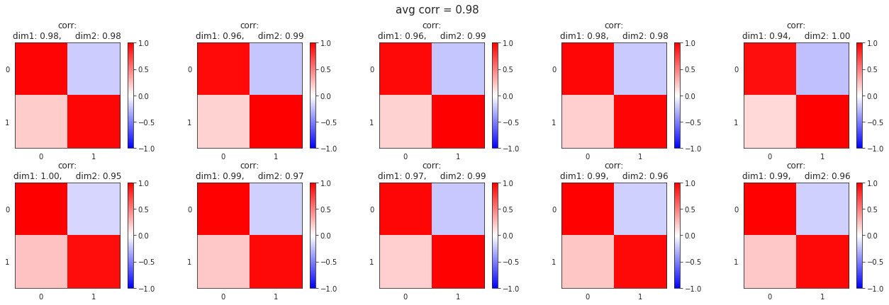
expt_id = 5
a = sim['proj_mats'][expt_id]
b = cca.ws[expt_id]
plt.plot(normalize(a)[:, 0])
plt.plot(normalize(b)[:, 0], 'r--')
[<matplotlib.lines.Line2D at 0x7fd857d514f0>]
plt.figure(figsize=(10, 3))
plt.subplot(121)
for c in cca.comps:
plt.plot(c[:30, 0])
plt.subplot(122)
plt.plot(sim['z_train'][:30, 0], c='k')
[<matplotlib.lines.Line2D at 0x7fd857c73670>]
LOOP¶
df, args = run_cca_loop(
n_seeds=30,
reg=0.1,
sample_sizes=[100],
sigmas=0.1,
normal=True,
three_d=False,
num_expts=10,
min_ncs=[2, 4, 8, 16, 32, 64],
max_ncs=[4, 8, 16, 32, 64, 256, 1024],
)
pred_r = np.zeros((len(args['min_ncs']), len(args['max_ncs'])))
latent_corr = np.zeros((len(args['min_ncs']), len(args['max_ncs'])))
proj_cos_sim = np.zeros((len(args['min_ncs']), len(args['max_ncs'])))
for i, min_nc in enumerate(args['min_ncs']):
for j, max_nc in enumerate(args['max_ncs']):
selected_df = df.loc[(df.min_nc == min_nc) & (df.max_nc == max_nc)]
pred_r[i, j] = selected_df.pred_r.mean()
latent_corr[i, j] = selected_df.latent_corr.mean()
proj_cos_sim[i, j] = selected_df.proj_cos_sim.mean()
fig, axes = plt.subplots(1, 3, figsize=(11, 3.5), sharex='all', sharey='all')
sns.heatmap(pred_r, xticklabels=args['max_ncs'], yticklabels=args['min_ncs'], ax=axes[0])
sns.heatmap(latent_corr, xticklabels=args['max_ncs'], yticklabels=args['min_ncs'], ax=axes[1])
sns.heatmap(proj_cos_sim, xticklabels=args['max_ncs'], yticklabels=args['min_ncs'], ax=axes[2])
axes[0].set_title('pred_r')
axes[1].set_title('latent corr')
axes[2].set_title('proj cosine sim')
axes[0].set_ylabel('min num cells')
axes[0].set_xlabel('max num cells')
axes[1].set_xlabel('max num cells')
axes[2].set_xlabel('max num cells')
fig.tight_layout()
plt.show()
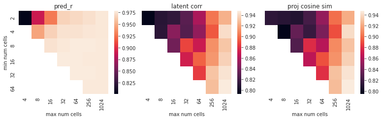
Effect of noise¶
df, args = run_cca_loop(
n_seeds=30,
reg=0.1,
sample_sizes=[10, 50, 100],
sigmas=np.linspace(0.0, 2.0, 41)[::-1],
normal=True,
three_d=False,
num_expts=[10],
min_ncs=[32],
max_ncs=[128],
)
plt.figure(figsize=(10, 4))
palette = sns.color_palette(palette=None, n_colors=3)
plt.subplot(131)
sns.lineplot(x='sigma', y='pred_r', data=df, hue='n_samples', style='n_samples',
dashes=False, lw=2, palette=palette)
plt.subplot(132)
sns.lineplot(x='sigma', y='latent_corr', data=df, hue='n_samples', style='n_samples',
dashes=False, lw=2, palette=palette)
plt.subplot(133)
sns.lineplot(x='sigma', y='proj_cos_sim', data=df, hue='n_samples', style='n_samples',
dashes=False, lw=2, palette=palette)
plt.tight_layout()
plt.show()
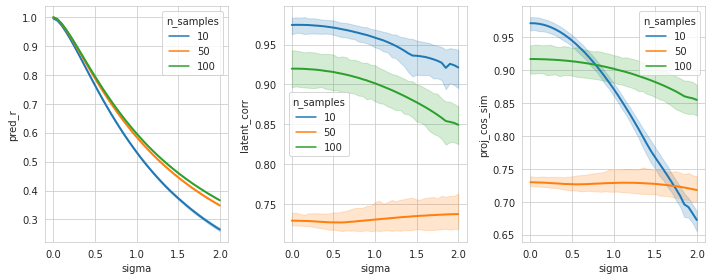